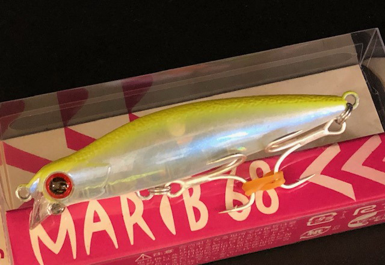
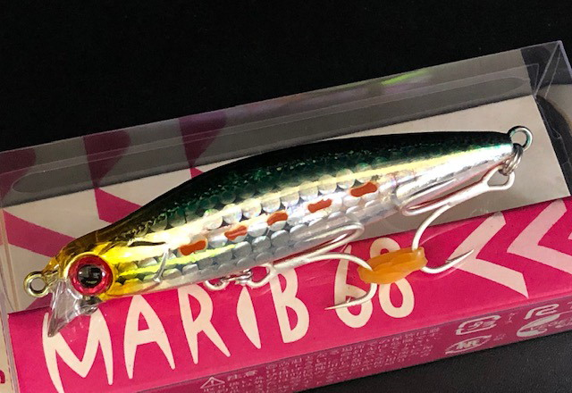
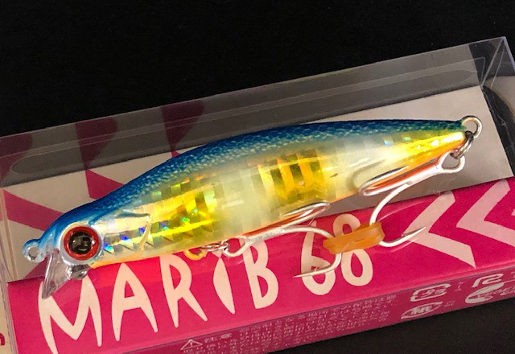
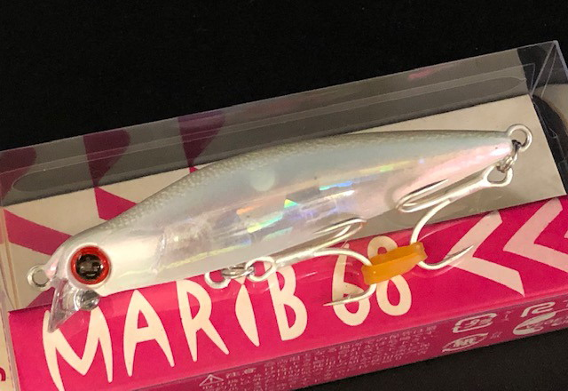
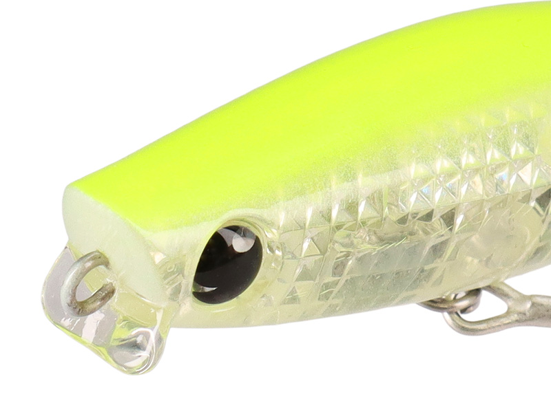

マリブ68
（MARiB68）
マリブ68（MARiB68）はMangrove Studio（マングローブスタジオ）のシンキングペンシルです。
“湾奥の超エキスパート”大野ゆうきがプロデュースした「マリブ」のダウンサイズモデル。シンペンの遠投性と波動を抑えたアクションはそのままに、リップを付けて無駄な浮き上がりや蛇行を抑えた「シンペンコンセプトミノー」で、レンジキープできるシンペンとして長く愛用されている1本です。

画像出典:キングフィッシャー
スペック
- メーカー
- Mangrove Studio（マングローブスタジオ）
- タイプ
- シンキングペンシル（リップ付き）
- 全長
- 68mm
- 自重
- 9.2g
- 有効レンジ
- 水面付近〜60cm
- フック
- オーナー ST-46 #10
- ターゲット
- シーバス
- 価格
- 1,760円（税込）
▼今すぐチェック
マリブ68の特徴
シンペンの使いにくさを徹底的に改善した、レンジキープできる「シンペンコンセプトミノー」
-
リップでレンジキープ、足元まで浮き上がりにくい
リップを付けることで、シンペン特有の無駄な浮き上がりや蛇行を防止。横風でラインがあおられる状況や足場の高い場所からでも、なるべく足元まで浮き上がりを抑えてレンジをキープできる。
-
引き抵抗と飛行姿勢の安定
リトリーブ時の引き抵抗を高めて、シンペンでもルアーの位置や状態を把握しやすい。飛行姿勢も安定しており、同じスポットへ繰り返し投げても着水点がブレにくい。
-
スレにくい喰わせのアクション
波動を抑えたアクションで、難しい魚にも口を使わせる喰わせ能力と、長時間バイトを出し続けるスレにくさを狙った設計。約2年半をかけて作り込まれている。
マリブ68の使い方
基本はスローリトリーブ。着水後すぐに巻き始めれば水面付近、カウントダウンしてから巻き始めればより深いレンジを探れる。
リトリーブスピードとロッドの角度（ティップの位置）で探るレンジを変えられるので、まずは表層付近から始めて、反応が無ければカウントを増やして一段ずつ下げていくのが組み立ての基本です。
マリブ68の得意な状況
港湾・運河・河川などのベイエリアで、マイクロベイトや小型ベイトを捕食している状況が出番。
冬から春にかけての表層のマイクロベイトパターンや、プレッシャーの高いポイントでスレた魚を狙う場面で強い。小粒ながら飛距離が出るので、届かせたいけれどシルエットは小さくしたい場面にも向きます。
ワンポイント
レンジ操作はカウントダウンとロッドの角度の組み合わせで考えると分かりやすくなります。反応が出たカウントと角度を覚えておき、同じレンジを繰り返し通すのがコツです。
慣れてくると、スペック以上にレンジを広げて操れるようになります。
マリブのサイズの使い分け
| モデル | 全長／自重 | 得意な場面 |
|---|---|---|
| 68 | 68mm／9.2g | 水面付近〜60cm。マイクロベイトや小型ベイトに（本記事のモデル） |
| 78 | 78mm | 水面付近〜80cm。港湾や河川のナイトゲームで使いやすい中間サイズ |
| 92 | 92mm | 水面付近〜120cm。より深いレンジや大きめのベイトに |
マリブは68・78・92の3サイズ展開で、サイズごとにボディラインやウエイト配分を変えて作り込まれている。ベイトのサイズと探りたいレンジで選び分けるのがオススメです。
人気カラー
マリブ68は大野ゆうき氏の提案による個性的なカラーを含む全15色展開。ベイエリアのシーバス狙いでオススメのカラーを厳選して紹介します。

CC-9 ハッピーレモン 大野SPクリアにレモンを効かせた大野ゆうき氏のスペシャルカラー。常夜灯周りやマイクロベイトパターンの定番。

ML-2gr マルチイワシ 大野SPレンズホロのイワシカラー。日中や澄み潮でベイトに合わせたいときに。

BH-64 ボラグローボーダーホロにグローを組み合わせたボラ系。ローライトやナイトゲームに。

CC-7 コーラルピンククリアクラッシュホロのピンク系。濁り気味の潮やアピールを足したい場面に。
画像出典:キングフィッシャー
マリブ68に似ているルアー
-
 モアザン ガルバ73S
ダイワ
詳細はこちら＞
モアザン ガルバ73S
ダイワ
詳細はこちら＞
全長73mm・自重12.8gのリップ付きシンキングペンシル。同じく大野ゆうき氏の監修で、ショートリップで水面直下〜20cmをスローにキープするコンセプトがマリブ68と近い。より水面寄りを引きたいときに。
-

モアザン ガルバ64S ダイワ 詳細はこちら＞全長64mm・自重9.7gのガルバシリーズ最小モデル。マリブ68とほぼ同じサイズ感で、マイクロベイトパターンの食わせ役として使い分けたい1本。
-
 グラバーHi 68S
邪道
詳細はこちら＞
グラバーHi 68S
邪道
詳細はこちら＞
全長68mm・自重11gのシンキングミノー。マリブ68と同じ68mmで、ファストリトリーブや激流に強い。流れの速い場所や、早巻きで反応を出したいときの持ち替えに。